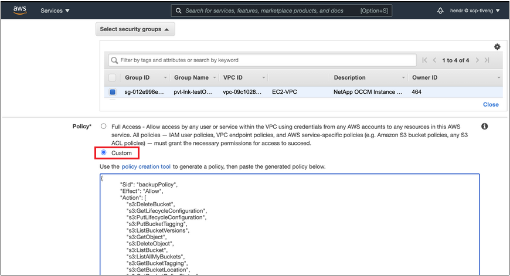

Note di rilascio
Note di rilascio
Eseguire il backup dei dati ONTAP on-premise su Amazon S3
 Suggerisci modifiche
Suggerisci modifiche
Completa alcuni passaggi per iniziare a eseguire il backup dei dati dei volumi dai tuoi sistemi ONTAP on-premise su un sistema di storage secondario e su uno storage cloud Amazon S3.

|
I "sistemi ONTAP on-premise" includono sistemi FAS, AFF e ONTAP Select. |
Avvio rapido
Inizia subito seguendo questa procedura. I dettagli di ciascuna fase sono forniti nelle sezioni seguenti di questo argomento.
 Identificare il metodo di connessione da utilizzare
Identificare il metodo di connessione da utilizzareScegliere se connettere il cluster ONTAP on-premise direttamente ad AWS S3 tramite Internet pubblico o se utilizzare una connessione diretta VPN o AWS e instradare il traffico ad AWS S3 attraverso un'interfaccia endpoint privata VPC.
 Preparare il connettore BlueXP
Preparare il connettore BlueXPSe si dispone già di un connettore implementato in AWS VPC o on-premise, si è tutti pronti. In caso contrario, è necessario creare un connettore BlueXP per eseguire il backup dei dati ONTAP nello storage AWS S3. Sarà inoltre necessario personalizzare le impostazioni di rete per il connettore in modo che possa connettersi ad AWS S3.
 Verificare i requisiti di licenza
Verificare i requisiti di licenzaÈ necessario verificare i requisiti di licenza per AWS e BlueXP.
Fare riferimento a. Verificare i requisiti di licenza.
 Preparare i cluster ONTAP
Preparare i cluster ONTAPIndividuare i cluster ONTAP in BlueXP, verificare che soddisfino i requisiti minimi e personalizzare le impostazioni di rete in modo che i cluster possano connettersi ad AWS S3.
 Preparare Amazon S3 come destinazione di backup
Preparare Amazon S3 come destinazione di backupImpostare le autorizzazioni per il connettore per creare e gestire il bucket S3. È inoltre necessario impostare le autorizzazioni per il cluster ONTAP on-premise in modo che possa leggere e scrivere i dati nel bucket S3.
In alternativa, puoi impostare le tue chiavi personalizzate per la crittografia dei dati invece di utilizzare le chiavi di crittografia Amazon S3 predefinite. Scopri come preparare il tuo ambiente AWS S3 per ricevere backup ONTAP.
 Attivare i backup sui volumi ONTAP
Attivare i backup sui volumi ONTAPSelezionare l'ambiente di lavoro e fare clic su Enable > Backup Volumes (Abilita > volumi di backup) accanto al servizio di backup e ripristino nel pannello di destra. Quindi, seguire la procedura di installazione guidata per selezionare i criteri di replica e backup da utilizzare e i volumi di cui si desidera eseguire il backup.
Identificare il metodo di connessione
Scegliere quale dei due metodi di connessione utilizzare per la configurazione dei backup da sistemi ONTAP on-premise ad AWS S3.
-
Connessione pubblica - connette direttamente il sistema ONTAP ad AWS S3 utilizzando un endpoint pubblico S3.
-
Connessione privata - utilizza una connessione VPN o AWS Direct e instrada il traffico attraverso un'interfaccia endpoint VPC che utilizza un indirizzo IP privato.
In alternativa, è possibile connettersi a un sistema ONTAP secondario per i volumi replicati utilizzando anche la connessione pubblica o privata.
Il seguente diagramma mostra il metodo connessione pubblica e le connessioni che è necessario preparare tra i componenti. È possibile utilizzare un connettore installato in sede o un connettore implementato in AWS VPC.

Il seguente diagramma mostra il metodo private Connection e le connessioni che è necessario preparare tra i componenti. È possibile utilizzare un connettore installato in sede o un connettore implementato in AWS VPC.

Preparare il connettore BlueXP
BlueXP Connector è il software principale per la funzionalità BlueXP. Per eseguire il backup e il ripristino dei dati ONTAP è necessario un connettore.
Creare o cambiare connettori
Se si dispone già di un connettore implementato in AWS VPC o on-premise, si è tutti pronti.
In caso contrario, sarà necessario creare un connettore in una di queste posizioni per eseguire il backup dei dati ONTAP nello storage AWS S3. Non puoi utilizzare un connettore implementato in un altro provider cloud.
-
"Installare un connettore in un'area AWS GovCloud"
Il backup e ripristino BlueXP è supportato nelle regioni di GovCloud quando il connettore viene implementato nel cloud, non quando viene installato nelle vostre sedi. Inoltre, è necessario implementare il connettore da AWS Marketplace. Non è possibile implementare il connettore in un'area governativa dal sito Web di BlueXP SaaS.
Preparare i requisiti di rete dei connettori
Verificare che siano soddisfatti i seguenti requisiti di rete:
-
Assicurarsi che la rete in cui è installato il connettore abiliti le seguenti connessioni:
-
Una connessione HTTPS tramite la porta 443 al servizio di backup e ripristino BlueXP e allo storage a oggetti S3 ("vedere l'elenco degli endpoint")
-
Una connessione HTTPS sulla porta 443 alla LIF di gestione del cluster ONTAP
-
Per le implementazioni di AWS e AWS GovCloud sono richieste regole aggiuntive per i gruppi di sicurezza in entrata e in uscita. Vedere "Regole per il connettore in AWS" per ulteriori informazioni.
-
-
"Assicurarsi che il connettore disponga delle autorizzazioni per gestire il bucket S3".
-
Se si dispone di una connessione diretta o VPN dal cluster ONTAP al VPC e si desidera che la comunicazione tra il connettore e S3 rimanga nella rete interna AWS (una connessione privata), è necessario attivare un'interfaccia endpoint VPC su S3. Scopri come configurare un'interfaccia endpoint VPC.
Verificare i requisiti di licenza
È necessario verificare i requisiti di licenza per AWS e BlueXP:
-
Prima di poter attivare il backup e il ripristino BlueXP per il cluster, è necessario sottoscrivere un'offerta di pagamento a consumo (PAYGO) BlueXP Marketplace di AWS oppure acquistare e attivare una licenza BYOL di backup e ripristino BlueXP di NetApp. Queste licenze sono destinate al tuo account e possono essere utilizzate su più sistemi.
-
Per le licenze PAYGO di backup e ripristino BlueXP, è necessario un abbonamento a "Offerta NetApp BlueXP di AWS Marketplace". La fatturazione per il backup e il ripristino BlueXP viene effettuata tramite questo abbonamento.
-
Per le licenze BYOL di backup e ripristino BlueXP, è necessario il numero di serie di NetApp che consente di utilizzare il servizio per la durata e la capacità della licenza. "Scopri come gestire le tue licenze BYOL".
-
-
È necessario disporre di un abbonamento AWS per lo spazio di storage a oggetti in cui verranno collocati i backup.
Regioni supportate
Puoi creare backup da sistemi on-premise ad Amazon S3 in tutte le regioni "Dove è supportato Cloud Volumes ONTAP"; Incluse le regioni di AWS GovCloud. Specificare la regione in cui verranno memorizzati i backup quando si imposta il servizio.
Preparare i cluster ONTAP
Dovrai preparare il tuo sistema ONTAP on-premise di origine e qualsiasi altro sistema ONTAP o Cloud Volumes ONTAP secondario on-premise.
La preparazione dei cluster ONTAP prevede i seguenti passaggi:
-
Scopri i tuoi sistemi ONTAP in BlueXP
-
Verificare i requisiti di sistema di ONTAP
-
Verificare i requisiti di rete di ONTAP per il backup dei dati nello storage a oggetti
-
Verificare i requisiti di rete di ONTAP per la replica dei volumi
Scopri i tuoi sistemi ONTAP in BlueXP
Il sistema ONTAP di origine on-premise e qualsiasi sistema ONTAP o Cloud Volumes ONTAP secondario on-premise devono essere disponibili su BlueXP Canvas.
Per aggiungere il cluster, è necessario conoscere l'indirizzo IP di gestione del cluster e la password dell'account utente amministratore.
"Scopri come individuare un cluster".
Verificare i requisiti di sistema di ONTAP
Assicurarsi che siano soddisfatti i seguenti requisiti ONTAP:
-
Almeno ONTAP 9.8; si consiglia ONTAP 9.8P13 e versioni successive.
-
Una licenza SnapMirror (inclusa nel Premium Bundle o nel Data Protection Bundle).
Nota: il "Hybrid Cloud Bundle" non è richiesto quando si utilizza il backup e ripristino BlueXP.
Scopri come "gestire le licenze del cluster".
-
L'ora e il fuso orario sono impostati correttamente. Scopri come "configurare l'ora del cluster".
-
Se si intende replicare i dati, è necessario verificare che i sistemi di origine e di destinazione eseguano versioni di ONTAP compatibili prima di replicare i dati.
Verificare i requisiti di rete di ONTAP per il backup dei dati nello storage a oggetti
È necessario configurare i seguenti requisiti sul sistema che si connette allo storage a oggetti.
-
Per un'architettura di backup fan-out, configurare le seguenti impostazioni sul sistema primario.
-
Per un'architettura di backup a cascata, configurare le seguenti impostazioni sul sistema secondario.
Sono necessari i seguenti requisiti di rete del cluster ONTAP:
-
Il cluster richiede una connessione HTTPS in entrata dal connettore alla LIF di gestione del cluster.
-
Su ogni nodo ONTAP che ospita i volumi di cui si desidera eseguire il backup è richiesta una LIF intercluster. Queste LIF intercluster devono essere in grado di accedere all'archivio di oggetti.
Il cluster avvia una connessione HTTPS in uscita sulla porta 443 dalle LIF dell'intercluster allo storage Amazon S3 per le operazioni di backup e ripristino. ONTAP legge e scrive i dati da e verso lo storage a oggetti: Lo storage a oggetti non viene mai avviato, ma risponde.
-
Le LIF dell'intercluster devono essere associate a IPSpace che ONTAP deve utilizzare per connettersi allo storage a oggetti. "Scopri di più su IPspaces".
Quando si imposta il backup e il ripristino di BlueXP, viene richiesto di utilizzare IPSpace. È necessario scegliere l'IPSpace a cui sono associate queste LIF. Potrebbe trattarsi dell'IPSpace "predefinito" o di un IPSpace personalizzato creato.
Se si utilizza un IPSpace diverso da quello predefinito, potrebbe essere necessario creare un percorso statico per accedere allo storage a oggetti.
Tutte le LIF di intercluster all'interno di IPSpace devono avere accesso all'archivio di oggetti. Se non è possibile configurare questa opzione per l'IPSpace corrente, è necessario creare un IPSpace dedicato in cui tutte le LIF dell'intercluster abbiano accesso all'archivio di oggetti.
-
I server DNS devono essere stati configurati per la VM di storage in cui si trovano i volumi. Scopri come "Configurare i servizi DNS per SVM".
-
Aggiornare le regole del firewall, se necessario, per consentire le connessioni di backup e ripristino BlueXP da ONTAP allo storage a oggetti tramite la porta 443 e il traffico di risoluzione dei nomi dalla VM dello storage al server DNS tramite la porta 53 (TCP/UDP).
-
Se si utilizza un endpoint dell'interfaccia VPC privata in AWS per la connessione S3, per utilizzare HTTPS/443, è necessario caricare il certificato dell'endpoint S3 nel cluster ONTAP. Scopri come configurare un'interfaccia endpoint VPC e caricare il certificato S3.
-
"Assicurarsi che il cluster ONTAP disponga delle autorizzazioni per accedere al bucket S3".
Verificare i requisiti di rete di ONTAP per la replica dei volumi
Se intendi creare volumi replicati su un sistema ONTAP secondario utilizzando il backup e recovery di BlueXP, assicurati che i sistemi di origine e destinazione soddisfino i seguenti requisiti di rete.
Requisiti di rete ONTAP on-premise
-
Se il cluster si trova in sede, è necessario disporre di una connessione dalla rete aziendale alla rete virtuale nel cloud provider. Si tratta in genere di una connessione VPN.
-
I cluster ONTAP devono soddisfare ulteriori requisiti di subnet, porta, firewall e cluster.
Poiché è possibile eseguire la replica su sistemi Cloud Volumes ONTAP o on-premise, esaminare i requisiti di peering per i sistemi ONTAP on-premise. "Visualizzare i prerequisiti per il peering dei cluster nella documentazione di ONTAP".
Requisiti di rete Cloud Volumes ONTAP
-
Il gruppo di sicurezza dell'istanza deve includere le regole in entrata e in uscita richieste, in particolare le regole per ICMP e le porte 11104 e 11105. Queste regole sono incluse nel gruppo di protezione predefinito.
Preparare Amazon S3 come destinazione di backup
La preparazione di Amazon S3 come destinazione di backup prevede i seguenti passaggi:
-
Impostare le autorizzazioni S3.
-
(Facoltativo) Crea i tuoi bucket S3. (Il servizio creerà i bucket per te, se lo desideri).
-
(Facoltativo) impostare le chiavi AWS gestite dal cliente per la crittografia dei dati.
-
(Facoltativo) configurare il sistema per una connessione privata utilizzando un'interfaccia endpoint VPC.
Impostare le autorizzazioni S3
È necessario configurare due set di autorizzazioni:
-
Permessi per il connettore per creare e gestire il bucket S3.
-
Autorizzazioni per il cluster ONTAP on-premise in modo che possa leggere e scrivere i dati nel bucket S3.
-
Confermare che le seguenti autorizzazioni S3 (dall'ultima "Policy BlueXP") Fanno parte del ruolo IAM che fornisce al connettore le autorizzazioni necessarie. In caso contrario, consultare "Documentazione AWS: Modifica delle policy IAM".
Details
{ "Sid": "backupPolicy", "Effect": "Allow", "Action": [ "s3:DeleteBucket", "s3:GetLifecycleConfiguration", "s3:PutLifecycleConfiguration", "s3:PutBucketTagging", "s3:ListBucketVersions", "s3:GetObject", "s3:DeleteObject", "s3:PutObject", "s3:ListBucket", "s3:ListAllMyBuckets", "s3:GetBucketTagging", "s3:GetBucketLocation", "s3:GetBucketPolicyStatus", "s3:GetBucketPublicAccessBlock", "s3:GetBucketAcl", "s3:GetBucketPolicy", "s3:PutBucketPolicy", "s3:PutBucketOwnershipControls", "s3:PutBucketPublicAccessBlock", "s3:PutEncryptionConfiguration", "s3:GetObjectVersionTagging", "s3:GetBucketObjectLockConfiguration", "s3:GetObjectVersionAcl", "s3:PutObjectTagging", "s3:DeleteObjectTagging", "s3:GetObjectRetention", "s3:DeleteObjectVersionTagging", "s3:PutBucketObjectLockConfiguration", "s3:DeleteObjectVersion", "s3:GetObjectTagging", "s3:PutBucketVersioning", "s3:PutObjectVersionTagging", "s3:GetBucketVersioning", "s3:BypassGovernanceRetention", "s3:PutObjectRetention", "s3:GetObjectVersion", "athena:StartQueryExecution", "athena:GetQueryResults", "athena:GetQueryExecution", "glue:GetDatabase", "glue:GetTable", "glue:CreateTable", "glue:CreateDatabase", "glue:GetPartitions", "glue:BatchCreatePartition", "glue:BatchDeletePartition" ], "Resource": [ "arn:aws:s3:::netapp-backup-*" ] }
Quando si creano backup nelle regioni AWS China, è necessario modificare il nome risorsa AWS "arn" in tutte le sezioni Resource delle policy IAM da "aws" a "aws-cn", ad esempio arn:aws-cn:s3:::netapp-backup-*. -
Quando si attiva il servizio, la procedura guidata di backup richiede di inserire una chiave di accesso e una chiave segreta. Queste credenziali vengono passate al cluster ONTAP in modo che ONTAP possa eseguire il backup e il ripristino dei dati nel bucket S3. A tale scopo, è necessario creare un utente IAM con le seguenti autorizzazioni.
Fare riferimento a. "Documentazione AWS: Creazione di un ruolo per delegare le autorizzazioni a un utente IAM".
Details
{ "Version": "2012-10-17", "Statement": [ { "Action": [ "s3:GetObject", "s3:PutObject", "s3:DeleteObject", "s3:ListBucket", "s3:ListAllMyBuckets", "s3:GetBucketLocation", "s3:PutEncryptionConfiguration" ], "Resource": "arn:aws:s3:::netapp-backup-*", "Effect": "Allow", "Sid": "backupPolicy" }, { "Action": [ "s3:ListBucket", "s3:GetBucketLocation" ], "Resource": "arn:aws:s3:::netapp-backup*", "Effect": "Allow" }, { "Action": [ "s3:GetObject", "s3:PutObject", "s3:DeleteObject", "s3:ListAllMyBuckets", "s3:PutObjectTagging", "s3:GetObjectTagging", "s3:RestoreObject", "s3:GetBucketObjectLockConfiguration", "s3:GetObjectRetention", "s3:PutBucketObjectLockConfiguration", "s3:PutObjectRetention" ], "Resource": "arn:aws:s3:::netapp-backup*/*", "Effect": "Allow" } ] }
Crea i tuoi bucket
Per impostazione predefinita, il servizio crea i bucket. In alternativa, se si desidera utilizzare i propri bucket, è possibile crearli prima di avviare la procedura guidata di attivazione del backup e selezionare tali bucket nella procedura guidata.
Se si creano i propri bucket, è necessario utilizzare il nome del bucket "netapp-backup". Se si desidera utilizzare un nome personalizzato, modificare ontapcloud-instance-policy-netapp-backup IAMRole per i CVO esistenti e aggiungere il seguente elenco ai permessi S3. Devi includere “Resource”: “arn:aws:s3:::*” e assegnare tutte le autorizzazioni necessarie che devono essere associate al bucket.
Details
"Azione": [
"S3:ListBucket"
"S3:GetBucketLocation"
]
"Risorsa": "arn:aws:s3:::*",
"Effetto": "Consenti"
},
{
"Azione": [
"S3:GetObject",
"S3:PutObject",
"S3:DeleteObject",
"S3:ListAllMyBucket",
"S3:PutObjectTagging",
"S3:GetObjectTagging",
"S3:RestoreObject",
"S3:GetBucketObjectLockConfiguration",
"S3:GetObjectRetention",
"S3:PutBucketObjectLockConfiguration",
"S3:PutObjectRetention"
]
"Risorsa": "arn:aws:s3:::*",
Configurare le chiavi AWS gestite dal cliente per la crittografia dei dati
Se si desidera utilizzare le chiavi di crittografia predefinite di Amazon S3 per crittografare i dati trasferiti tra il cluster on-premise e il bucket S3, l'installazione predefinita utilizza questo tipo di crittografia.
Se invece si desidera utilizzare le proprie chiavi gestite dal cliente per la crittografia dei dati piuttosto che le chiavi predefinite, è necessario che le chiavi gestite per la crittografia siano già impostate prima di avviare la procedura guidata di backup e ripristino BlueXP. "Fare riferimento a come utilizzare le proprie chiavi".
Configurare il sistema per una connessione privata utilizzando un'interfaccia endpoint VPC
Se si desidera utilizzare una connessione Internet pubblica standard, tutte le autorizzazioni vengono impostate dal connettore e non è necessario eseguire altre operazioni. Questo tipo di connessione viene mostrato nella "primo diagramma".
Se si desidera una connessione più sicura via Internet dal data center on-premise al VPC, è possibile selezionare una connessione AWS PrivateLink nella procedura guidata di attivazione del backup. È necessario se si intende utilizzare una VPN o una connessione diretta AWS per collegare il sistema on-premise tramite un'interfaccia endpoint VPC che utilizza un indirizzo IP privato. Questo tipo di connessione viene mostrato nella "secondo diagramma".
-
Creare una configurazione dell'endpoint dell'interfaccia utilizzando la console Amazon VPC o la riga di comando. "Consulta i dettagli sull'utilizzo di AWS PrivateLink per Amazon S3".
-
Modificare la configurazione del gruppo di protezione associata a BlueXP Connector. È necessario modificare la policy in "Custom" (da "Full Access") Aggiungere le autorizzazioni S3 dal criterio di backup come mostrato in precedenza.

Se si utilizza la porta 80 (HTTP) per la comunicazione con l'endpoint privato, si è tutti impostati. È ora possibile attivare il backup e il ripristino BlueXP sul cluster.
Se si utilizza la porta 443 (HTTPS) per la comunicazione con l'endpoint privato, è necessario copiare il certificato dall'endpoint VPC S3 e aggiungerlo al cluster ONTAP, come illustrato nei 4 passaggi successivi.
-
Ottenere il nome DNS dell'endpoint dalla console AWS.

-
Ottenere il certificato dall'endpoint VPC S3. Lo fai entro "Accesso alla macchina virtuale che ospita BlueXP Connector" ed eseguire il seguente comando. Quando si immette il nome DNS dell'endpoint, aggiungere "bucket" all'inizio, sostituendo "*":
[ec2-user@ip-10-160-4-68 ~]$ openssl s_client -connect bucket.vpce-0ff5c15df7e00fbab-yxs7lt8v.s3.us-west-2.vpce.amazonaws.com:443 -showcerts -
Dall'output di questo comando, copiare i dati per il certificato S3 (tutti i dati compresi tra i tag BEGIN / END CERTIFICATE):
Certificate chain 0 s:/CN=s3.us-west-2.amazonaws.com` i:/C=US/O=Amazon/OU=Server CA 1B/CN=Amazon -----BEGIN CERTIFICATE----- MIIM6zCCC9OgAwIBAgIQA7MGJ4FaDBR8uL0KR3oltTANBgkqhkiG9w0BAQsFADBG … … GqvbOz/oO2NWLLFCqI+xmkLcMiPrZy+/6Af+HH2mLCM4EsI2b+IpBmPkriWnnxo= -----END CERTIFICATE----- -
Accedere alla CLI del cluster ONTAP e applicare il certificato copiato utilizzando il seguente comando (sostituire il proprio nome della VM di storage):
cluster1::> security certificate install -vserver cluster1 -type server-ca Please enter Certificate: Press <Enter> when done
Attivare i backup sui volumi ONTAP
Attiva i backup in qualsiasi momento direttamente dall'ambiente di lavoro on-premise.
La procedura guidata consente di eseguire le seguenti operazioni principali:
Puoi anche farlo Mostra i comandi API durante la fase di revisione, è possibile copiare il codice per automatizzare l'attivazione del backup per gli ambienti di lavoro futuri.
Avviare la procedura guidata
-
Accedere alla procedura guidata attiva backup e ripristino utilizzando uno dei seguenti metodi:
-
Nell'area di lavoro di BlueXP, selezionare l'ambiente di lavoro e selezionare Enable > Backup Volumes (Abilita > volumi di backup) accanto al servizio di backup e ripristino nel pannello a destra.
Se la destinazione Amazon S3 per i backup esiste come ambiente di lavoro su Canvas, puoi trascinare il cluster ONTAP sullo storage a oggetti Amazon S3.
-
Selezionare Volumes (volumi) nella barra Backup and Recovery (Backup e ripristino). Dalla scheda volumi, selezionare azioni
 E selezionare attiva backup per un singolo volume (che non ha già attivato la replica o il backup nell'archiviazione a oggetti).
E selezionare attiva backup per un singolo volume (che non ha già attivato la replica o il backup nell'archiviazione a oggetti).
La pagina Introduzione della procedura guidata mostra le opzioni di protezione, tra cui snapshot locali, replica e backup. Se è stata eseguita la seconda opzione in questa fase, viene visualizzata la pagina Definisci strategia di backup con un volume selezionato.
-
-
Continuare con le seguenti opzioni:
-
Se si dispone già di un connettore BlueXP, tutti i dispositivi sono impostati. Seleziona Avanti.
-
Se non si dispone già di un connettore BlueXP, viene visualizzata l'opzione Aggiungi un connettore. Fare riferimento a. Preparare il connettore BlueXP.
-
Selezionare i volumi di cui si desidera eseguire il backup
Scegliere i volumi che si desidera proteggere. Per volume protetto si intende un volume con una o più delle seguenti opzioni: Policy di snapshot, policy di replica, policy di backup su oggetti.
Puoi scegliere di proteggere volumi FlexVol o FlexGroup; tuttavia, non puoi selezionare un mix di questi volumi quando si attiva il backup per un ambiente di lavoro. Scopri come "attivare il backup per volumi aggiuntivi nell'ambiente di lavoro" (FlexVol o FlexGroup) dopo aver configurato il backup per i volumi iniziali.
|
|
|
Se per i volumi selezionati sono già state applicate le policy di snapshot o replica, le policy selezionate in seguito sovrascriveranno quelle esistenti.
-
Nella pagina Select Volumes (Seleziona volumi), selezionare il volume o i volumi che si desidera proteggere.
-
In alternativa, filtrare le righe per visualizzare solo i volumi con determinati tipi di volume, stili e altro ancora per semplificare la selezione.
-
Dopo aver selezionato il primo volume, è possibile selezionare tutti i volumi FlexVol (è possibile selezionare solo i volumi FlexGroup uno alla volta). Per eseguire il backup di tutti i volumi FlexVol esistenti, selezionare prima un volume, quindi selezionare la casella nella riga del titolo. (
 ).
). -
Per eseguire il backup di singoli volumi, selezionare la casella relativa a ciascun volume (
 ).
).
-
-
Selezionare Avanti.
Definire la strategia di backup
La definizione della strategia di backup implica l'impostazione delle seguenti opzioni:
-
Sia che si desideri una o tutte le opzioni di backup: Snapshot locali, replica e backup su storage a oggetti
-
Architettura
-
Policy Snapshot locale
-
Target e policy di replica
Se i volumi scelti hanno policy di replica e snapshot diverse da quelle selezionate in questa fase, le policy esistenti verranno sovrascritte. -
Backup delle informazioni sullo storage a oggetti (provider, crittografia, rete, policy di backup e opzioni di esportazione).
-
Nella pagina Definisci strategia di backup, scegliere una o tutte le opzioni seguenti. Per impostazione predefinita, vengono selezionate tutte e tre le opzioni:
-
Local Snapshots: Se si esegue la replica o il backup sullo storage a oggetti, è necessario creare snapshot locali.
-
Replication: Consente di creare volumi replicati su un altro sistema storage ONTAP.
-
Backup: Esegue il backup dei volumi nello storage a oggetti.
-
-
Architettura: Se si sceglie la replica e il backup, scegliere uno dei seguenti flussi di informazioni:
-
Cascading: Flussi di informazioni dal primario al secondario allo storage a oggetti e dal secondario allo storage a oggetti.
-
Fan out: I flussi di informazioni dal primario al secondario e dallo storage primario a oggetti.
Per ulteriori informazioni su queste architetture, fare riferimento a. "Pianifica il tuo percorso di protezione".
-
-
Istantanea locale: Scegliere un criterio istantanea esistente o creare un criterio.

Per creare un criterio personalizzato prima di attivare l'istantanea, fare riferimento alla sezione "Creare un criterio". Per creare un criterio, selezionare Crea nuovo criterio ed effettuare le seguenti operazioni:
-
Immettere il nome del criterio.
-
Selezionare fino a 5 programmi, generalmente di frequenze diverse.
-
Selezionare Crea.
-
-
Replication: Impostare le seguenti opzioni:
-
Destinazione della replica: Selezionare l'ambiente di lavoro di destinazione e SVM. Facoltativamente, selezionare l'aggregato o gli aggregati di destinazione e il prefisso o suffisso da aggiungere al nome del volume replicato.
-
Criterio di replica: Scegliere un criterio di replica esistente o crearne uno.
Per creare un criterio personalizzato prima di attivare la replica, fare riferimento alla sezione "Creare un criterio". Per creare un criterio, selezionare Crea nuovo criterio ed effettuare le seguenti operazioni:
-
Immettere il nome del criterio.
-
Selezionare fino a 5 programmi, generalmente di frequenze diverse.
-
Selezionare Crea.
-
-
-
Backup su oggetto: Se si seleziona Backup, impostare le seguenti opzioni:
-
Provider: Selezionare Amazon Web Services.
-
Provider settings (Impostazioni provider): Inserire i dettagli del provider e la regione AWS in cui verranno memorizzati i backup.
La chiave di accesso e la chiave segreta sono destinate all'utente IAM creato per consentire al cluster ONTAP di accedere al bucket S3.
-
Bucket: Scegliere un bucket S3 esistente o crearne uno nuovo. Fare riferimento a. "Aggiungere i bucket S3".
-
Chiave di crittografia: Se è stato creato un nuovo bucket S3, immettere le informazioni sulla chiave di crittografia fornite dal provider. Per gestire la crittografia dei dati, scegli se utilizzare le chiavi di crittografia Amazon S3 predefinite o le chiavi gestite dal cliente dall'account AWS.
Se si sceglie un bucket esistente, le informazioni di crittografia sono già disponibili, quindi non è necessario immetterle ora. -
Rete: Scegliere IPSpace e scegliere se si desidera utilizzare un endpoint privato. L'endpoint privato è disattivato per impostazione predefinita.
-
IPSpace nel cluster ONTAP in cui risiedono i volumi di cui si desidera eseguire il backup. Le LIF intercluster per questo IPSpace devono disporre di accesso a Internet in uscita.
-
Se si desidera, scegliere se utilizzare un AWS PrivateLink precedentemente configurato. "Scopri i dettagli sull'utilizzo di AWS PrivateLink per Amazon S3".
-
-
Criterio di backup: Selezionare un criterio di backup esistente o crearne uno.
Per creare un criterio personalizzato prima di attivare il backup, fare riferimento alla sezione "Creare un criterio". Per creare un criterio, selezionare Crea nuovo criterio ed effettuare le seguenti operazioni:
-
Immettere il nome del criterio.
-
Selezionare fino a 5 programmi, generalmente di frequenze diverse.
-
Selezionare Crea.
-
-
Esporta copie Snapshot esistenti nello storage a oggetti come copie di backup: Se vi sono copie Snapshot locali per i volumi in questo ambiente di lavoro che corrispondono all'etichetta di pianificazione del backup appena selezionata per questo ambiente di lavoro (ad esempio, giornaliero, settimanale, ecc.), viene visualizzata questa richiesta aggiuntiva. Selezionare questa casella per copiare tutte le istantanee storiche nello storage a oggetti come file di backup per garantire la protezione più completa per i volumi.
-
-
Selezionare Avanti.
Rivedere le selezioni
Questa è la possibilità di rivedere le selezioni e apportare eventuali modifiche.
-
Nella pagina Review (esamina), rivedere le selezioni.
-
Facoltativamente, selezionare la casella Sincronizza automaticamente le etichette dei criteri Snapshot con le etichette dei criteri di replica e backup. In questo modo, vengono create istantanee con un'etichetta che corrisponde alle etichette dei criteri di replica e backup.
-
Selezionare Activate Backup (attiva backup).
Il backup e ripristino di BlueXP inizia a eseguire i backup iniziali dei volumi. Il trasferimento di riferimento del volume replicato e del file di backup include una copia completa dei dati del sistema di storage primario. I trasferimenti successivi contengono copie differenziali dei dati primari contenuti nelle copie Snapshot.
Nel cluster di destinazione viene creato un volume replicato che verrà sincronizzato con il volume di storage primario.
Il bucket S3 viene creato nell'account di servizio indicato dalla chiave di accesso S3 e dalla chiave segreta immessa e i file di backup vengono memorizzati in tale account. Viene visualizzata la dashboard di backup del volume, che consente di monitorare lo stato dei backup.
È inoltre possibile monitorare lo stato dei processi di backup e ripristino utilizzando "Pannello Job Monitoring (monitoraggio processi)".
Mostra i comandi API
È possibile visualizzare e, facoltativamente, copiare i comandi API utilizzati nella procedura guidata attiva backup e ripristino. Questa operazione potrebbe essere utile per automatizzare l'attivazione del backup negli ambienti di lavoro futuri.
-
Dalla procedura guidata Activate backup and recovery (attiva backup e ripristino), selezionare View API request (Visualizza richiesta API).
-
Per copiare i comandi negli Appunti, selezionare l'icona Copia.
Quali sono le prossime novità?
-
È possibile "gestire i file di backup e le policy di backup". Ciò include l'avvio e l'arresto dei backup, l'eliminazione dei backup, l'aggiunta e la modifica della pianificazione di backup e molto altro ancora.
-
È possibile "gestire le impostazioni di backup a livello di cluster". Ciò include la modifica delle chiavi di storage utilizzate da ONTAP per accedere allo storage cloud, la modifica della larghezza di banda della rete disponibile per caricare i backup nello storage a oggetti, la modifica dell'impostazione di backup automatico per i volumi futuri e molto altro ancora.
-
Puoi anche farlo "ripristinare volumi, cartelle o singoli file da un file di backup" A un sistema Cloud Volumes ONTAP in AWS o a un sistema ONTAP on-premise.